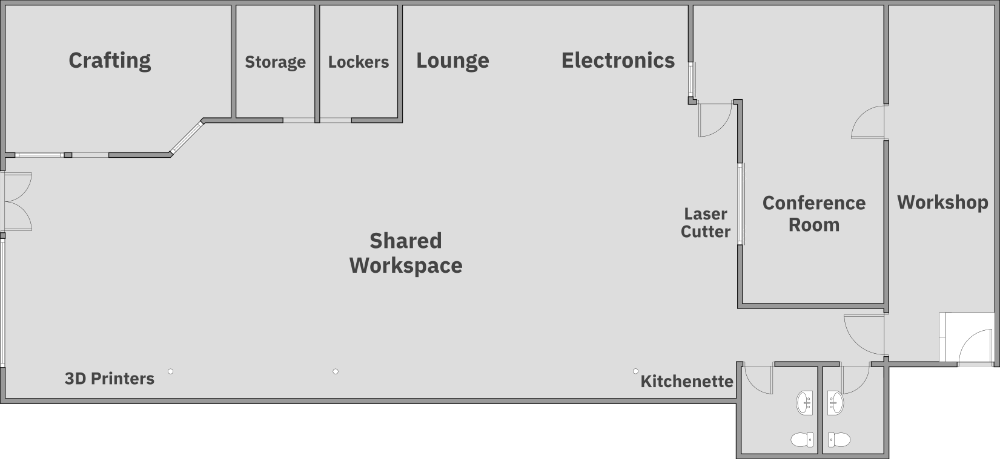

Facilities

Root Access has several main areas:
- Shared Workspace
Tables, chairs, and access to Wifi, plus access to 3D printers and our laser cutter.
- Crafting
Home to all things textiles, fiber arts, and general arts and crafts.
- Lounge
Couches, TV, and video games; a space to chill out.
- Electronics
All manner of electronics tools, as well as our component library.
- Kitchenette
Microwave, coffee maker, refrigerator, and the tools you’ll be needin’ for eatin’.
- Conference Room
A space for private meetings, small classes, and the occasional D&D campaign group.
- Workshop
Loud and/or messy tools live back here.
Tools and Equipment
Our tools and equipment include, but are not limited to:
3D Printers
Elegoo Mars 2 (MSLA/Resin)
Ender 3 (× 2)
FlashForge Finder
Electronics
Componant library
Multimeters
Power supplies
Soldering irons
Workbench
Crafting
Sewing machines and sergers
Knitting, crochet, & embroidery tools
Cricut and heat press
Pin-back button makers
Jewelry tools
Laser Cutter
BOSS Laser LS-1630 (105w, with rotary tool)
Workshop
Assorted hand and power tools
Various saws and sanders
Bench and angle grinders
Drill press
Benchtop CNC
MIG welder
Printing
Black & white laser printer
Color laser printer/copier
Epson Stylus Pro 9800 (44” wide format printer)
Consumables
Many of the tools at Root Access use tooling that wears out (consumables). These include things like drill bits, saw blades, dremel bits, etc. We try to keep basic tooling available for most tools, but we cannot supply tooling for every possible project. It is important that if something is broken, worn down, or accidentally abused that you inform leadership right away. We try to provide the basics and may have replacements. If you are working with a costly material or need high precision, you will be well served by bringing your own tooling.